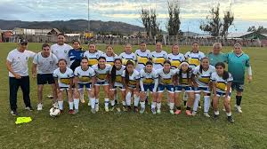
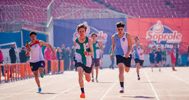
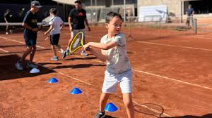

FÚTBOL
Equipo local avanza a la final del campeonato comunal tras una ajustada victoria

En un partido disputado hasta los últimos minutos, el representativo local consiguió
el paso a la final luego de imponerse por la cuenta mínima, generando gran expectativa
entre los hinchas y vecinos del sector.
ESCOLAR
Estudiantes destacan en torneo interescolar de atletismo realizado durante el fin de semana

La competencia reunió a distintos establecimientos de la zona y permitió que varios
alumnos obtuvieran reconocimientos en pruebas de velocidad, salto y resistencia,
fortaleciendo el deporte formativo.
RECREACIÓN
Municipio anuncia nueva agenda de talleres deportivos abiertos para niños y adultos

La programación contempla actividades de fútbol, baile entretenido, acondicionamiento
físico y entrenamiento funcional, con el objetivo de fomentar la vida sana y la
participación deportiva en la comunidad.